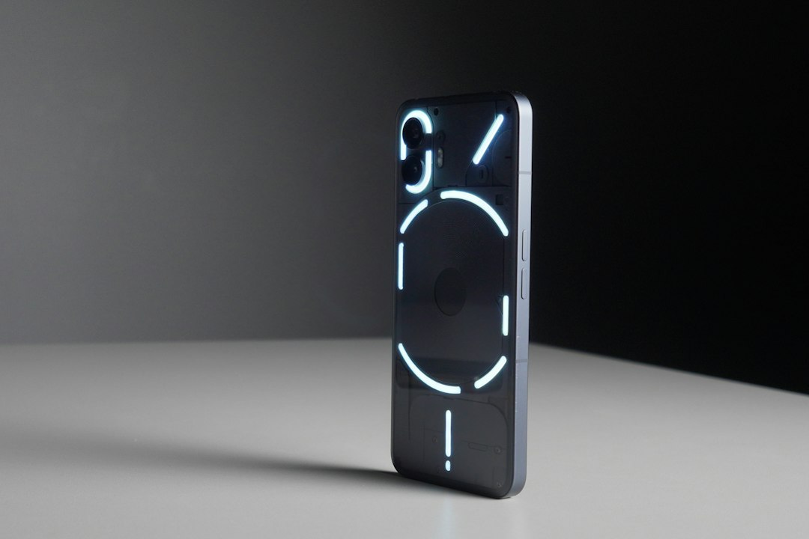

Innovazione Sicurezza Outdoor: AURA Proximity per Motociclisti, Camperisti e Responsabili Cantieri

Sicurezza e Comunicazione Avanzata per Motociclisti, Camperisti, Atleti, Responsabili Sicurezza Cantieri e Guide Outdoor: Come Evolverà il Settore nei Prossimi 24 Mesi
- L’evoluzione tecnologica impone nuove soluzioni per garantire la sicurezza in ambienti isolati o con scarsa copertura 4G.
- I rischi di infortuni e perdita di gruppo durante viaggi in colonna o attività outdoor possono causare gravi danni operativi e umani.
- AURA Proximity di RM Studio offre un ecosistema integrato, senza app, con tecnologie all’avanguardia per comunicazione e monitoraggio in tempo reale.
Analisi approfondita della notizia e delle implicazioni operative
Nel contesto outdoor moderno, le esigenze di sicurezza e comunicazione per motociclisti, camperisti, atleti impegnati in discipline all’aperto, responsabili della sicurezza nei cantieri (conformi al D.Lgs 81/08) e guide naturalistiche si fanno sempre più stringenti. La crescente diffusione di attività su percorsi isolati o in ambienti difficilmente coperti da reti cellulari tradizionali sta evidenziando limiti critici nelle modalità di coordinamento e soccorso.
Le normative sempre più rigorose sulla sicurezza sul lavoro impongono inoltre un controllo preciso sui lavoratori isolati, dove ogni secondo può fare la differenza in caso di incidente. Questo scenario spinge il settore verso soluzioni digitali ibride, che non si affidano esclusivamente alla rete cellulare ma integrano sistemi di comunicazione mesh e rilevazioni automatiche di cadute.
L’espansione delle nuove tecnologie di rete mesh, i sistemi di posizionamento tattico e le interfacce vocali intelligenti stanno rivoluzionando la gestione degli incidenti e la comunicazione tra membri di team dinamici. Si tratta di un cambiamento evolutivo che entro i prossimi 24 mesi vedrà un’adozione massiccia di piattaforme dedicate per garantire sicurezza, efficienza e risparmio sui costi di gestione dei rischi.
Le conseguenze e i costi di non agire
Ignorare l’adeguamento alle nuove tecnologie significa esporsi a rischi operativi e umani significativi. Perdersi durante un viaggio in colonna su moto o camper compromette non solo la continuità del viaggio ma anche la sicurezza individuale e di gruppo. Per i lavoratori isolati nei cantieri o in attività outdoor, una caduta senza soccorsi immediati può avere esiti tragici, aggravati dalla lacuna di una rete 4G affidabile su sentieri e aree immerse nella natura.
I danni sul piano operativo si traducono in ritardi, costi aggiuntivi e possibili sanzioni legali per mancato rispetto delle norme di sicurezza. L’assenza di una comunicazione rapida e sicura può comportare inoltre perdita di reputazione e forte riduzione della fiducia da parte dei clienti e dipendenti.
In termini finanziari, gli investimenti in soluzioni obsolete comportano spreco di risorse con ritorni limitati, mentre un approccio tecnologico integrato permette una riduzione drastica degli incidenti e una gestione più efficace delle emergenze, ottimizzando tempi e risorse di intervento.
Come AURA Proximity risolve il problema
AURA Proximity di RM Studio si propone come la soluzione nativa SaaS ideale, specificamente concepita per questo panorama operativamente complesso. Grazie a un radar di prossimità tattico innovativo e a una chat Mesh Peer-to-Peer 100% Web, AURA Proximity elimina il vincolo da app installate, funzionando integrato direttamente via browser.
Le funzionalità principali di AURA Proximity sono:
- Radar di prossimità tattico: monitora in tempo reale la vicinanza tra i membri del gruppo, mantenendo la coesione e prevenendo dispersioni anche in territori complessi.
- Chat Mesh P2P 100% Web: garantisce una comunicazione affidabile e diretta indipendentemente dalla presenza di rete cellulare, fondamentale per le vie più impervie o cantieri remoti.
- Co-Pilota Vocale a mani libere: una interfaccia intuitiva per restare connessi e ricevere avvisi senza distrazioni, essenziale per la sicurezza in movimento.
- Rilevamento impatti/cadute Man-Down (>3G): tecnologia avanzata capace di riconoscere cadute e inviare automaticamente un SOS tramite WhatsApp, assicurando soccorsi tempestivi.
- Bussola direzionale 3D: aiuta a orientarsi e a mantenere il percorso corretto anche in assenza di segnaletica tradizionale.
Il modello commerciale è flessibile e accessibile: dal Pass Viaggio Singolo a €4,90 fino al Piano Pro mensile da €19, senza obbligo di installazioni app esterne, adattandosi alle esigenze specifiche di ogni professionista o team.
| Caratteristica | Gestione Tradizionale | Con AURA Proximity |
|---|---|---|
| Copertura Comunicazione | Limitata a rete 4G/5G disponibile | Mesh P2P Web indipendente da rete cellulare |
| Rilevamento Cadute/Infortuni | Nessuno o sistema di allarme manuale | Automatizzato con invio SOS WhatsApp integrato |
| Chiamata d’emergenza | Manuale, variabile in efficacia | Automatica e immediata in caso di impatto o caduta |
| Facilità d’uso | Richiede app e configurazioni complesse | Nessuna app, uso 100% browser e assistente vocale |
| Supporto navigazione | Bussola e mappe esterne non integrate | Bussola 3D tattica integrata nel sistema |
💡 Ti è stato utile questo approfondimento?
Condividilo con un collega o un amico del settore Motociclisti, Camperisti, Atleti, Responsabili Sicurezza Cantieri (D.Lgs 81/08) e Guide Outdoor a cui potrebbe interessare!
FAQ: Domande Frequenti
1. AURA Proximity funziona in assenza totale di rete cellulare?
Sì, grazie alla tecnologia Mesh P2P 100% Web, la comunicazione avviene direttamente tra dispositivi via browser, senza necessità di connessioni 4G/5G.
2. È necessario scaricare una app per utilizzare AURA Proximity?
No, AURA Proximity è accessibile direttamente da browser con funzionalità integrate come il co-pilota vocale a mani libere.
3. Come avviene il rilevamento di cadute e l’invio degli SOS?
Il sistema utilizza sensori Man-Down avanzati (>3G) che identificano automaticamente impatti o cadute e inviano un messaggio SOS immediato via WhatsApp ai contatti di emergenza.
Inizia Subito
Pass Viaggio Singolo a €4.90 o Piano Pro a €19/mese. Nessuna app da installare.
Fonti Ufficiali e Risorse Esterne
Scopri l'Intelligenza Artificiale per la tua attività
Ottimizza i processi e aumenta le vendite con le soluzioni B2B di RM Studio.
Scopri AURA Proximity